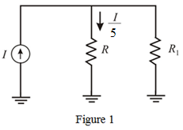
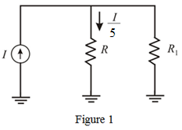
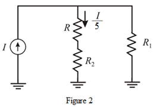
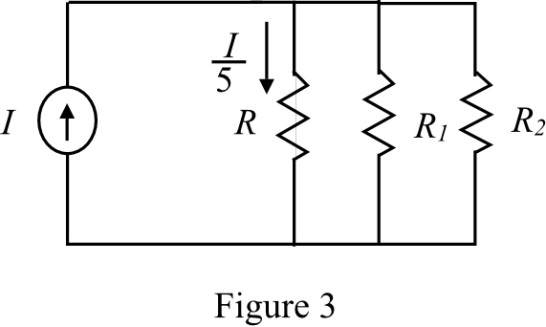

Only one fifth of a signal current  passes through load resistor
passes through load resistor .
.
Design a current divider circuit that can implement the one fifth current requirement.
Draw a simple current divider circuit.

Only one fifth of a signal current passes through load resistor.
Design a current divider circuit that can implement the one fifth current requirement.
Draw a simple current divider circuit.

Calculate the current passing through resistor  using Kirchhoff’s current law.
using Kirchhoff’s current law.
The voltages across the parallel resistors are equal.
Thus, the voltages and are equal.
Therefore, the required resistor value is .
Calculate the input resistance,  .
.
Therefore, the input resistance, is  .
.
Design of the first topology.
Connect the resistor  in series with load resistor
in series with load resistor ; draw the circuit.
; draw the circuit.

The resistor  is
is  high than the value of the resistor R.
high than the value of the resistor R.
The voltages across the parallel resistors are equal.
Therefore, the required resistor value is .
 .
.
Therefore, the input resistance for the first topology is .
is .
Determine the second topology; connect all the required resistors in parallel.

The resistor  is
is  higher in value than the resistor R.
higher in value than the resistor R.
The current going to the parallel combination of the resistors and
and  is .
is .
The voltage across the resistors R,  and
and  are the same, as they are connected in parallel.
are the same, as they are connected in parallel.
,  is the current through the resistor
is the current through the resistor  .
.
Substitute for  .
.
Determine the current through the resistor  .
.
Apply Kirchhoff’s current law at the common node.
Substitute 0.72I for  .
.
The voltage across the resistor is equal.
Substitute 0.08I for .
Thus, the value of the resistance  is .
is .
Determine the input resistance of the circuit.
Substitute 2.5R for  and for
and for  .
.
Simplify further.
Thus, the input impedance for the second circuit topology is .